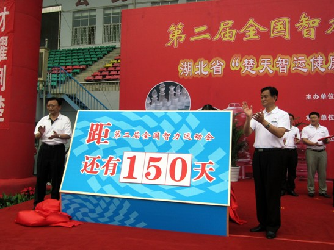
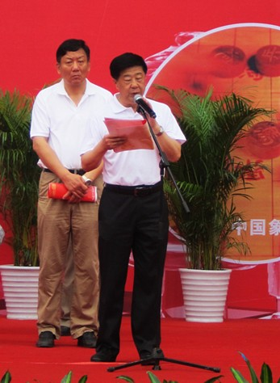
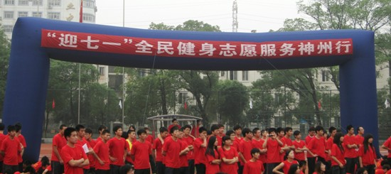
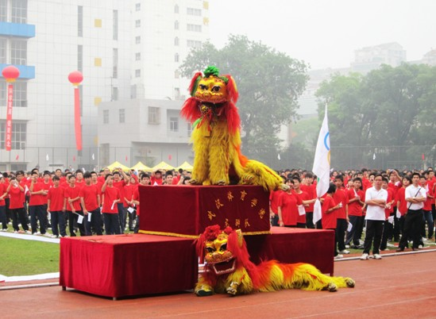
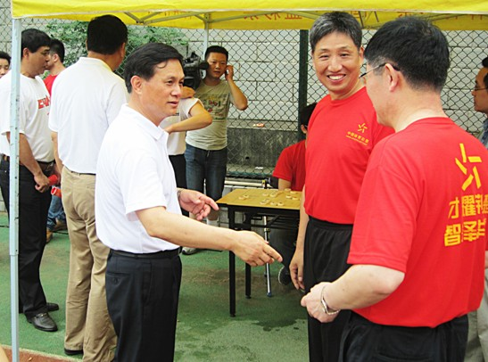

第二届全国智运会倒计时150天启动仪式隆重举行
#1 第二届全国智运会倒计时150天启动仪式隆重举行作者：我就不信注册不上 发表时间：2011-6-15 18:01:53
启动仪式
中国棋院在线讯 6月11日，由湖北省实施《全民健身条例》工作委员会和第二届全国智力运动会组委会主办的第二届全国智力运动会倒计时150天暨湖北省“楚天智运健康快乐行”活动——走进学校启动仪式在武汉体育学院隆重举行。国家体育总局局长助理晓敏，省人大常委会副主任罗辉，省政协副主席涂勇，总局棋牌运动管理中心主任刘思明，省委宣传部副部长文成国，省体育局局长胡德春，武汉体育学院党委书记黄浩军、院长孙义良，团省委副书记陈正祥，以及湖北省体育局和武汉体育学院的领导出席了本次启动仪式，并与现场武汉体院近万名师生一起参与了棋牌进学校活动。
国家体育总局局长助理晓敏宣布活动正式启动
仪式上，国家体育总局局长助理晓敏为湖北智运之星志愿服务团授旗，省人大副主任罗辉、省政协副主席涂勇为智运会倒计时150天揭牌，省体育局局长胡德春和总局棋牌运动管理中心主任刘思明分别发表了热情洋溢的讲话。最后，晓敏局长助理宣布第二届全国智力运动会倒计时150天暨湖北省“楚天智运健康快乐行”活动——走进学校启动式正式开始。
晓敏同志为湖北智运之星志愿服务团代表中国象棋特级大师柳大华授旗
随后，领导们与武汉体院师生共同参加了迎智运万人签名和中国象棋万人同下活动，并参观了棋牌车轮战和表演赛、体育彩票宣传等迎“七一”全民健身志愿服务神州行活动。活动现场氛围浓厚热烈，广大师生和棋迷爱好者纷纷与象棋特级大师柳大华、围棋职业高手阮云生等智运之星志愿服务团对弈、交流，极大地激发了学生们对棋牌运动的兴趣。

省人大副主任罗辉、省政协副主席涂勇为智运会倒计时150天揭牌
本次活动作为我省“楚天智运健康快乐行”六进活动之一，旨在以迎接第二届全国智力运动会为契机，深入贯彻《全民健身条例》，并以实际行动引领全省人民关注智运、宣传智运、参与智运。目前距智运会开幕还有150天，我省的各项筹备工作正以时不我待的紧迫感和责任感，高质量、高标准、高效率地有序推进。我省将以成功举办全国智运会为平台，全面展示我省群众体育和体育事业的发展成就，使湖北智力运动在我省建立体育强省的进程中发挥更大的作用。
湖北省体育局局长胡德春讲话

国家体育总局棋牌运动管理中心主任刘思明讲话

启动式活动现场

活动现场舞狮表演

胡德春局长与智运之星志愿服务团代表亲切交流
#2 Re:第二届全国智运会倒计时150天启动仪式隆重举行作者：湮落梓涵 发表时间：2011-6-15 18:09:57
要是在华师举办就好了
#3 Re:Re:第二届全国智运会倒计时150天启动仪式隆重举行作者：梧桐风 发表时间：2011-6-15 18:17:33
引用：不是很近嘛
原文由 湮落梓涵 发表于 2011-6-15 18:09:57 :
要是在华师举办就好了
#4 Re:第二届全国智运会倒计时150天启动仪式隆重举行作者：怪 发表时间：2011-6-15 18:30:07
柳大华很牛叉，不过胡荣华更牛叉，所以我当年买了胡大师的棋谱而对柳大师没啥印象。看着不像很老的样子？#5 Re:Re:第二届全国智运会倒计时150天启动仪式隆重举行作者：慕容晓文 发表时间：2011-6-17 10:02:24
引用：哪个啊
原文由 湮落梓涵 发表于 2011-6-15 18:09:57 :
要是在华师举办就好了
#6 Re:Re:第二届全国智运会倒计时150天启动仪式隆重举行作者：中中 发表时间：2011-6-17 12:23:31
引用：
原文由 湮落梓涵 发表于 2011-6-15 18:09:57 :
要是在华师举办就好了
庄同学是华师的？
去过华师，哈哈，那时候刚接触有禁。
#7 Re:第二届全国智运会倒计时150天启动仪式隆重举行作者：岑小鱼 发表时间：2011-7-3 18:28:25
华中?华东?华南?华北?#8 Re:第二届全国智运会倒计时150天启动仪式隆重举行作者：奇林 发表时间：2011-7-3 19:45:20
 我喜欢华师
我喜欢华师#9 Re:Re:第二届全国智运会倒计时150天启动仪式隆重举行作者：吉小鼠 发表时间：2011-7-7 13:13:19
引用：
原文由 岑小鱼 发表于 2011-7-3 18:28:25 :
华中?华东?华南?华北?
华中师范大学~ 到武汉体育大学走路过去大约十分钟的路程~~~
 月饼MM是这里的~~ 很不幸~~~ 俺也是这里的~~~
月饼MM是这里的~~ 很不幸~~~ 俺也是这里的~~~
［ 奇林 于 2011-7-8 11:05:35 时花20金币送鲜花一朵］